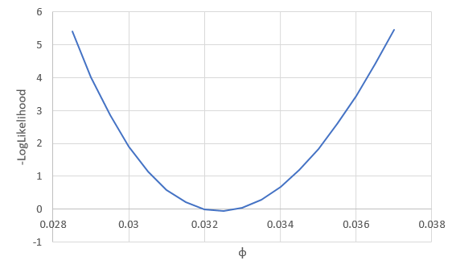

Likelihoods are used in a wide range of applications in biology. A major application of likelihood is in estimation - for example, we can use likelihood to fit a curve to data instead of using least squares, which we used last week. Another reason to use likelihood is that it is possible to compare different competing hypotheses that explain a data set against one another.
Our first application of likelihood will be to fit the Pnet curve to light intensity using maximum likelihood as an alternative to using least squares, which is what we used last week. For this approach, we will use the same curve as last time, but instead of minimizing the squared differences between observed and predicted values, we will maximize the likelihood of phi, Pmarea, and theta given the data.
Step 1. Calculate residuals.
Download this file to wherever you're keeping class files, and open it.
On worksheet CurveFit I have already predicted the net photosynthesis using the formula we used last week. The least squares estimates we came up with last week are recorded for your reference in cells A23 through B25 as the "Least squares estimates".
The predicted values of Pnet are coming from the parameter values in the "ML Estimates" section, cells B16 through 18. We will use Solver to change these until the likelihood maximizes. So, we need to calculate the likelihood.
As a first step, calculate the residuals. In cell D1 type "Residuals", and in D2 type =b2-c2. Copy and paste this to the rest of the predicted Pnets.
Step 2. Calculate likelihoods for each data point.
In cell e1 type "LogLikelihood". To calculate the likelihood, we will assume the residuals are normally distributed.
When you fit a line to data, the line represents the mean y-value expected for a given x. Residuals around the predicted values are thus differences from means. If the residuals are normally distributed they will be symmetrical around the line, with equal numbers of positive and negative differences. The likelihood for a residual will be calculated using the normal distribution, with 0 as the mean. We also need to specify the standard deviation, which is unknown, so we will use the "s of resid" in cell B19 as the standard deviation - we'll estimate this standard deviation at the same time as we get estimates for phi, Pmarea, and theta.
In cell e2 type =normdist(d2, 0, b$19, 0). The structure is: normdist(value, mean, std. deviation, cumulative), where value is the residual, the mean is set to 0, the standard deviation is to be estimated (currently set to 0.1, and in cell B19), and "cumulative" indicates whether we want the probability from negative infinity up to the value (cumulative set to 1) or just the probability density of the value itself (cumulative set to 0, which is what we want).
This gives us the likelihood, but we would like to work with log-likelihoods. So, modify the formula in E2 to be =ln(normdist(d2,0,b$19,0)). This takes the natural log of the normal probability. Copy and paste this to the rest of the cells.
Step 3. Calculate the likelihood of the entire data set.
Now, sum the log likelihoods you just calculated in E2 to E9 in cell E12.
Step 4. Use Solver to find the ML estimates.
Start Solver, and set it to maximize the log-likelihood in cell E12 by changing the parameters in B16-B18, and the standard deviation of the residuals in cell B19.
In a cell below the graph, mention any difference in the ML and least squares estimates (or tell me they are identical if you don't get any differences).
Assignment
That's it! We'll move on to using likelihood for analysis of DNA fingerprints next time.
Optional - profile likelihood confidence intervals
At this point you might be asking, so what? Demonstrating that likelihood can be used as an alternative to least squares is fine, but it doesn't really show any advantage to doing so. There are actually many advantages, but I'm going to just show you one. This gets a little deeper into the statistics than I want to require for class, but if you're interested read on.
We saw that a likelihood function has a curvature to it, and the place where it maximizes is the location of the estimate for the parameter. If we take the negative of the log-likelihood the maximum likelihood becomes the minimum log-likelihood.
We can vary just one of the three parameters at a time, and see how the likelihood changes if we change one parameter and not the others - for example, if we vary φ we see:
